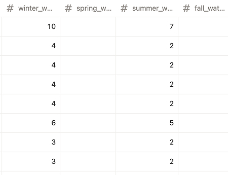
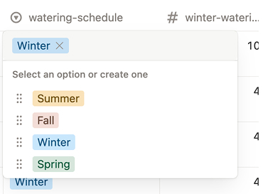
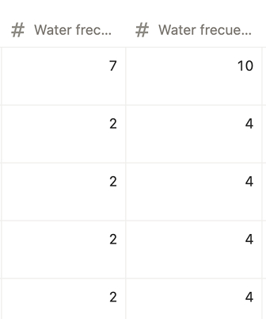

Winter is here. And before that, Fall came and went while I kept postponing updating my watering schedule for shorter and colder days. The tracker was showing "5 days overdue" for multiple plants, and I had to mentally calculate whether that delay was actually okay for winter conditions.
For version 1.2 I added seasonal schedule. An options to select between four schedules: Winter, Spring, Summer and Fall and manually select which one I want to use for the plants.
Building the seasonal system
Four schedules instead of two
Besides the clear differences between Summer and Winter, I also wanted to create a different schedule for Fall and Winter. Fall brings cold days and shorter sunlight, but without the heater running all day, plants retain moisture much longer. I tend to overwater during this transition.
Winter with the heater is different. Some plants near radiators dry out almost as fast as summer. Others stay consistently cool and need much less water.
And so I decided each season needs its own schedule, I will change if during spring and summer there is also a big difference.
Adding the new properties to the database
To add this I would need four values for each schedule and the logic to decide when to use each one. The simplest approach would be to convert [Water Frequency] into a type select with four different numbers, automatically switching based on the calendar date. But accessing that data for the formula would require a conversion I wasn't sure Notion even supported.
More importantly, it would break the self-documenting nature of the database. I want to see all the schedules at once and understand what each plant needs throughout the year.
So I went with the most transparent version. Four new properties, one for each season:
- winter_watering type:number
- spring_watering type:number
- summer_watering type:number
- fall_watering type:number
I put the season name first so I can make the columns narrower and still see which schedule I'm looking at.

Season selection
Next I needed to add these variables to the watering calculation . To select which schedules to use. But instead of changing to watering formula I kept my [water frequency] property and changes that property to a formula type to do the season calculation and have this watering frequency component isolated here.

The same reason I needed to make a difference between Fall and Winter I also didn’t want to use an automatic date calculation to change schedules. Winter season for me starts when I turn the heater on all day. Also some year the warm days arrive earlier/later so I wanted to manually select what schedule the app is using.
- I added a Watering Schedule property (type: select) with four options: Winter, Spring, Summer, Fall.
- For the last step I changed Water Frequency from a number to a formula that displays the value from whichever season is selected:
The "Error" at the end helps me catch any property naming mistakes. It should never appear.
I completed a Winter schedule based on my observation from the last weeks/months * cough cough* The spring and fall will be completed when the time comes.

I wish I could say that the difference for each plant was double, but it’s not the case because it depends on if the plant is close to a heater, then in some cases, the schedlue is even the same as in summer. Also the size of the pot, etc.
I know it can be work to calculate this, but also this is the while point, to not automate this number. You can take a guide but don;t take it for granted.
Small tweaks
As usual I added some small tweaks.
- From the last version, I changed the sorting back to just room order. The previous sorting (looking at plant by urgency first )was annoying in practice.
- And i also changed, hopefully for the last time, the case sensitive and format for the database properties. So now I’m using all lower caps and underscore.
What's Next
Check v1.2 in Notion → You can duplicate it and use it as your starting point.